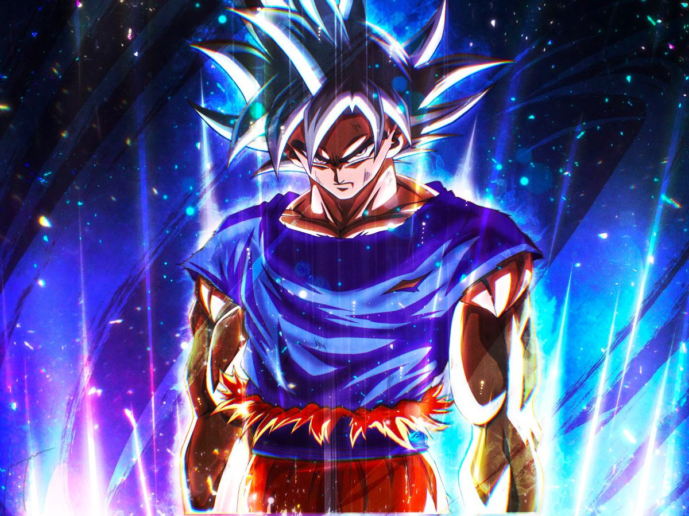
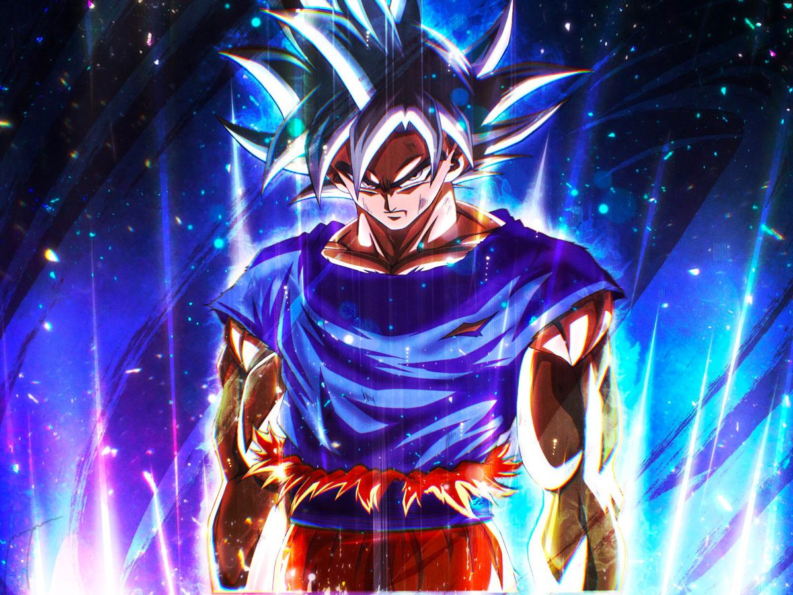

Sabemos que, como disse sor Loras Tyrell, uma vela não pode substituir o sol. Mas nesses tempos de Longa Noite, quando o sol (que, no caso, seria o sexto livro da saga) não pode nem mesmo ser visto e crianças nascem, crescem e morrem sem que GRRM tenha terminado o próximo volume, qualquer coisa é um agrado.
Pensando nisso, o pessoal da editora Random House, que desenvolveu um aplicativo para a futura enciclopédia “The World of Ice And Fire”, decidiu ser solidário com a legião de fãs que espera desesperadamente pelos “Ventos do Inverno”.
Em sua próxima atualização, que acontecerá em março, além das descrições de novos personagens e locações, o aplicativo disponibilizará um capítulo inteiro de The Winds Of Winter, que será contado a partir da perspectiva de Tyrion Lannister
Fernando Henrique Cardoso GCB • GCTE • GColSE • GColIH • GColL • GCM, também conhecido como FHC (Rio de Janeiro, 18 de junho de 1931), é um sociólogo, cientista político, professor universitário, escritor e político brasileiro. Filiado ao Partido da Social Democracia Brasileira (PSDB), foi o 34.º presidente da República Federativa do Brasil entre 1995 e 2003. Natural da cidade do Rio de Janeiro, mudou-se com sua família para a cidade de São Paulo, onde se casou em 1953 com a antropóloga e sua colega de faculdade Ruth Vilaça Correia Leite, com quem teve três filhos. FHC graduou-se em Sociologia pela Universidade de São Paulo e mais tarde tornou-se professor emérito daquela universidade. Foi perseguido depois do golpe militar de 1964, exilando-se no Chile e na França, voltando ao Brasil em 1968. Lecionou em universidades estrangeiras e desenvolveu uma importante carreira acadêmica, tendo produzido diversos estudos sociais premiados. FHC coordenou a elaboração da plataforma eleitoral do MDB. Em 1978, iniciou sua carreira política ao concorrer ao Senado Federal, elegendo-se suplente de Franco Montoro. Após a eleição deste para o governo de São Paulo, assumiu sua cadeira no Senado em março de 1983. Participou da campanha das Diretas Já, contribuindo para que não houvesse radicalização política durante a transição para a democracia. Foi derrotado por Jânio Quadros em 1985 para prefeito de São Paulo e reelegeu-se senador um ano depois. Tornou-se um dos principais líderes nacionais do PMDB e, juntamente com outros dissidentes do partido, ajudou a fundar o PSDB em 1988. Após o impeachment de Fernando Collor, foi nomeado por Itamar Franco como ministro das Relações Exteriores e ministro da Fazenda. Neste cargo, chefiou a elaboração do Plano Real, que estabilizou a economia. Com a ajuda do sucesso do plano, foi eleito Presidente da República no primeiro turno da eleição de 1994. Foi empossado presidente em 1.º de janeiro de 1995. Prosseguiu com as reformas econômicas iniciadas, as taxas de inflação continuaram baixas, houve a privatização de diversas empresas e a abertura de mercado, que deu maior visibilidade no mercado externo. O governo conseguiu a aprovação de leis na área econômica e administrativa, como a que permitiu a reeleição para cargos executivos. Em 1998, venceu a eleição presidencial no primeiro turno, tornando-se o primeiro presidente até então a ser reeleito. Durante o segundo mandato, crises internacionais, uma forte desvalorização do Real, a crise do apagão e outros acontecimentos causaram uma grande queda de sua popularidade. Atualmente preside a Fundação Fernando Henrique Cardoso, fundada por ele em 2004, e participa de diversos conselhos consultivos em diferentes órgãos no exterior, como o Clinton Global Initiative, Universidade Brown e United Nations Foundation. Também é membro do The Elders, da Academia Brasileira de Letras, e presidente de honra do PSDB.
Donnie Darko é um filme idealizado, escrito e dirigido por Richard Kelly, um cara que tinha só 26 anos quando o longa foi gravado. A história acompanha Donnie Darko, um adolescente perturbado que um dia acorda no meio da noite e encontra um coelhão satânico que diz saber o dia e a hora exata em que o mundo vai acabar. O longa conta com um elenco excepcional, uma das melhores utilizações de músicas em trilha sonora com gostinho de anos 90 e momentos memoráveis com diálogos malucos que ficaram eternizados, mas o que fez o filme virar um clássico cult foi seu roteiro pra lá de confuso. Ele termina deixando geral com uma cara de interrogação e é por isso que você vai encontrar dezenas de explicações diferentes pra história desse filme. Eu reassisti ao filme dezenas de vezes, entendi o que o roteiro propõe como “explicação oficial” e ainda desenvolvi uma teoria minha, completamente diferente de qualquer coisa que você vai encontrar por ai. Portanto, este texto será dividido em 4 partes: Um resumo do filme, em que eu visitarei e comentarei brevemente os acontecimentos importantes. Recomendo muito que todos leiam, porque eu vou destacar partes que talvez você não tenha prestado atenção ou tenha esquecido. A explicação oficial, que na verdade também é uma teoria minha, feita a partir da compilação de várias explicações. Eu tentei aparar todas as pontas soltas das coisas que encontrei e criar a versão mais fechada e lógica possível do que eu vou chamar de “Teoria Oficial”. A terceira parte é a minha teoria maluca, a da “Realidade Loopada”. É a parte mais inédita e complexa do texto. E a quarta parte é um conjunto de interpretações às analogias e discussões que esse filme propõe. O que, para mim, é a parte mais sensacional dessa obra. A minha ideia é que esse texto seja o material definitivo com todas as principais referências, explicações e analogias do meu filme predileto. Portanto, apertem os cintos porque você irá viajar comigo através da quarta dimensão para, finalmente, entender Donnie Darko. RESUMO Vamos agora a um resumo dos acontecimentos principais do filme: O longa começa com Donnie em cima de uma colina, observando um vale — segura que isso ainda vai ser importante. Depois, vemos a convivência do Donnie com a sua família, um tanto quanto complicada. Descobrimos que ele toma remédios psiquiátricos. Depois de bater boca com a mãe e até chamar a coitada de cadela, Donnie e os membros da família dormem (com excessão da irmã, que estava na farra). E é aí que as coisas começam a endoidar: Donnie ouve uma voz estranha, sai de sua cama em modo sonâmbulo, caminha até fora de casa e dá de cara com o coelho mais bizarro do universo. E é esse bicho feio que conta para o Donnie que o mundo vai acabar em 28 dias, 6 horas, 42 minutos e 12 segundos. Durante esse bate papo super normal com o coelhão satânico no campo de golfe no meio da madrugada, o inexplicável acontece: uma turbina de avião cai em cima do quarto de Donnie — ele só se salva porque o coelhão chamou ele pra fora de casa. Ninguém sabe de onde caralhos esse treco veio e ficamos sem entender nada. No hotel, os pais do Donnie conversam sobre a sorte do Donnie ter sobrevivido e mencionam um tal de Frankie, um colega antigo deles que morreu a caminho do baile de formatura. Conhecemos a escola de Donnie e vemos que lá é um ambiente hostil e parecido com outras escolas — adolescentes se drogando, se pegando, fazendo a porra toda. Esse plano sequencia, inclusive, é sensacional! Donnie vai para a aula de inglês e conhecemos a professora fodona. É aí que a paquera do Donnie aparece, a Gretchen, que já logo se engraça pro lado do Donnie quando a professora manda ela sentar do lado do menino mais gato da sala. Nessa aula, a professora está falando do livro “The Destructors”, em que adolescentes inundam e destroem uma casa — o Donnie diz uma frase marcante do filme “A destruição é uma forma de criação”. Na volta pra casa, Donnie encontra pela primeira vez a vovó morte, quando seu pai quase atropela a coitada. É nessa hora que a velhinha diz pra ele uma das frases mais famosas do filme — “Toda criatura desse mundo morre sozinha” — mas a gente só descobre que ela fala isso em uma das sessões de terapia que aparecem no filme. Nós também conhecemos outra professora do Donnie, que chamaremos aqui de professora babacona. Ela passa um vídeo chamado “Controlando o Medo”, que mostra uma espécie de filosofia papo furado de um tal de Jim Cunningham, que prega que as emoções humanas são sintetizadas em MEDO e AMOR. Beleza, o coelhão acorda o Donnie de novo e aí ele vai até a escola e causa horrores, inunda tudo (igual no livro da professora) e ainda finca um machadão numa estátua feita de bronze maciço — como, a gente também não entende. Por causa da inundação, não tem aula no dia seguinte. Os alunos todos estão retornando pra casa e é nessa hora que a Gretchen é importunada pela gangue dos trouxa bombadinho, até que o Donnie aparece para acompanhar ela. Eles vão trocando ideia até a casa dela e é aí que eles se conhecem direito e começam a se curtir, rola aquele clima. Uma parte importante desse diálogo é quando a Gretchen diz “Donnie Darko, que nome estranho, parece de super herói” e o Donnie responde “mas quem disse que eu não sou um?”. Beleza, acontece vários paranauês, até convocarem uma reunião de pais por conta do episódio da inundação da escola, é lá que a professora babacona acusa a professora fodona de dar livros “impróprios” para os alunos lerem, já que a escola sofreu um atentado semelhante ao descrito no livro que os alunos estavam lendo. Resultado: a professora fodona é demitida. Donnie tromba o coelhão no banheiro mais uma vez, e o coelho mostra mais um poder bizarro pro Donnie, uma espécie de barreira energética, é nessa hora que ele diz para o Donnie que “eu posso fazer qualquer coisa, e você também”. O coelhão também fala uma frase famosa e importante quando o Donnie pergunta de onde ele veio “Você acredita em viagem no tempo?”. Voltamos a aula da professora babacona, e assistimos mais um pouco à fita sobre medo e amor, a professora propõe um exercício chamado “Linha vital”, em que os alunos leem um dilema moral num cartãozinho e depois marcam na lousa em qual parte da linha vital o comportamento se aplica, AMOR ou MEDO. Porém, Donnie não se sente nem um pouco confortável com o exercício, porque, segundo ele, “as coisas não são tão simples, você está ignorando todo o espectro dos sentimentos humanos”, eles discutem e Donnie acaba mandando a professora enfiar o cartão no !@^&. Donnie vai perguntar para o professor de física sobre viagem no tempo. O professor então fala de Stephen Hawkins e de buracos de minhocas, explica que teoricamente se você entrasse em um buraco de minhoca dentro de uma nave você poderia sim se deslocar no tempo, mas que é tudo teoria. No meio desse papo, o professor entrega para o Donnie um livro muito importante: o livro “A filosofia da viagem no tempo”, de Roberta Sparrow — a vovó morte, aquela que quase foi atropelada. O professor diz que ela era uma freira que de uma hora para outra mudou radicalmente de vida e foi dar aula de ciências na escola. Ok, acontecem mais umas coisas, incluindo mais uma sessão de terapia, na qual o Donnie quase saca o bilau pra fora, até um momento em seu pai está assistindo futebol na sala e DO NADA uma espécie bizarra de gosma transparente começa a sair do peito de todo mundo, inclusive do Donnie. Ele segue a tal gosma até o quarto do pai, onde ele encontra uma arma. Ok, ele sai com a Gretchen e eles batem um papo sobre o primeiro beijo deles ainda não ter rolado. Ela diz que quer que seja especial, que ela quer ter uma lembrança bonita desse momento e que naquela hora tem um gordo inconveniente olhando. A mãe e o pai do Donnie visitam a psiquiatra dele e ela explica que o Donnie é esquizofrênico e por isso “sonha” acordado e enxerga todo tipo de maluquice. Ela diz que vai aumentar a quantidade de remédio que ele precisa tomar. Eis que o tal Jim Cunningham vai dar uma palestra na escola do Donnie, e lá ele mostra uma história de “um cara que fez todas as escolhas erradas”, o segundo “Frank” citado na história. É nessa palestra que o Donnie chama o cara de “fucking anticrist”. Depois disso, Donnie mostra pra Gretchen o livro da vovó morte e diz que estão acontecendo coisas estranhas com ele que aparecem descritas no livro. O Donnie tem o segundo papo com o professor de física, nessa ele já havia lido o livro da vovó morte e pergunta pro professor sobre várias coisas que vem acontecendo com ele, mas quando o assunto entra em religião, o professor diz que não pode mais responder. Donnie está caminhando na rua quando encontra a carteira do tal Jim Cunningham no chão, em frente a uma casa toda bacana, é ai que ele descobre onde o sujeito mora. Durante uma apresentação que o Donnie está fazendo com a Gretchen, um dos trombadinha marginal praticam bullying com a coitada, mencionando o episódio em que a mãe dela foi esfaqueada pelo padrasto. O Donnie vai lá consolar a coitada e PAM, primeiro beijo deles. Ok, Donnie leva a namoradinha para o cinema e é lá que a cena mais conhecida do filme rola: Ela dorme, o coelhão maldito aparece, e aí Donnie pergunta “Por que você está usando essa fantasia ridícula de coelho” É nessa cena que descobrimos também que o nome do coelhão maldito também é Frank, além de ver a cara dele, que tem o olho todo zoadasso, o terceiro citado no filme. Ok, Frank abre um portal na tela do cinema e mostra a casa do Jim Cunningham, e manda o menino botar fogo na porra toda. Dito e feito, ele vai lá enquanto a Gretchen dorme e toca o puteiro, e na escola está rolando a apresentação do grupo de dança que a irmã dele participa junto com a filha da professora babacona, as “Sparkle Motion”. No dia seguinte, por causa do incêndio na casa do filósofo de meia tigela, os bombeiros descobrem um calabouço de fucking pornografia infantil! WOOOOOW Ok, mais umas coisas acontecem e aí vemos a professora babacona ir implorar para a mãe do Donnie acompanhar o grupo de dança até uma competição em outra cidade, porque ela vai liderar um grupo de apoio ao tal do Jim Cunningham, que é tipo Deus pra ela, e por isso precisa ficar na cidade e ir na audiência em que ele vai ser julgado ou sei lá o que. A mãe do Donnie topa e deixa ele e a irmã mais velha sozinhos em casa. Ok, cena importante: Donnie está na sala com a professora fodona que foi demitida, ela está prestes a ir embora, e aí na lousa está escrito “Cellardoor”, que quer dizer “porta de adega”, a professora então diz que “um famoso linguista disse que entre todas as palavras cellar door é a mais bonita”. Corta para a sessão de terapia mais bizarra de todas, em que o Donnie confessa ter feito todas as coisas que ele aprontou para a psiquiatra, dizendo que o Frank pediu para ele e que ele teve que obedecer porque o coelhão salvou sua vida, é nessa consulta que o Frank aparece na sala, e o Donnie diz que o céu vai se abrir e aí a psiquiatra tenta acalmar o coitado. Ok, os irmãos estão sozinhos em casa e a irmã do Donnie recebe a notícia de que passou em Harvard, IEEEEI, então eles resolvem dar uma festa a fantasia aproveitando que os pais não estão. Ok, festa rolando, todo mundo fantasiado. Detalhe pra uma cena em que os amigos do Donnie dizem terem trazido umas cervejas roubadas e ele diz que na festa eles já tem um barril. A psiquiatra fica loucona e procura desesperada a mãe do Donnie, que tá viajando. A Gretchen chega na casa totalmente abalada porque a mãe dela sumiu. Eles vão pro quarto e lá, mesmo com a suspeita da mãe dela ter sido morta ou estar toda fodida, eles arranjam motivação pra uma pegação intensa! Durante esse rala e rola, a secretária eletrônica atende a mãe do Donnie, que avisa que o avião de volta chegará na cidade umas 8:30 da manhã. Lá em baixo, a irmão do Donnie pergunta aos amigos por um tal de FRANK, que, dizem eles, foi buscar cerveja. (estranho, né? porque existe uma cena só para deixar claro que já tem CERVEJA PRA KRL NESSA FESTA). Donnie está felizão porque acabou de ir para a cama com a menina que ele ama e DO NADA ele tem um registrevis foda e fica malzão, aí aquela gosma aparece novamente saindo dele, ele segue ela até geladeira, onde a plaquinha presa na porta diz “Frank esteve aqui. Foi buscar cerveja” — notem que é a mesma letra do chão da escola. Aï ele olha pela gosma transparente da Gretchen e diz que eles precisam ir pra um lugar urgente. Ele cita a vovó morte e o Frank, e aí ele, Gretchen e seus dois melhores amigos dão aquele #partiu de bike até a casa da Roberta Sparrow. Chegando lá, ele vê uma porta baixinha e lembra do “Cellar Door”, aí ele entra por ali mesmo numa espécie de sótão da casa da vovó morte. Ok, lá dentro estão os trombadinhas do filme que estavam assaltando o lugar e aí eles rendem todos os 4. E no meio da treta um carro vermelho aparece chegando louco. O Donnie diz pro trombadinha “Deus ex Maquina, o nosso salvador”, e aí o carro DESVIA da vovó morte, que surge lá do nada, e passa por cima da Gretchen, matando a coitada. Donnie vai lá, tenta acordar a coitada e enquanto isso vemos que quem estava dirigindo o carro era o FRANK, que na verdade é só um cara normal fantasiado para o halloween. Ok, Donnie saca o três oitão que ele pegou no quarto do pai e SENTA-LHE o pipoco na cara do Frank. Destaque para o que ele fala pra o amigo do Frank, que estava no banco do carona “Vá para casa e diga aos seus pais que vai ficar tudo bem”. Ok, Donnie carrega o corpo morto da coitada da Gretchen para o carro da mãe, da um beijinho de despedida na irmã que tá dormindo na ressaca, cata o carro e cola lá na colina do começo do filme. Aí que a coisa fica estranha. Ele observa do teto do carro uma formação estranha no céu. Lá está o avião da mãe dele passando. Vemos a câmera de dentro do avião e aí BOOM a turbina do avião sai, cai pelo buraco de minhoca e vemos ela “viajando no tempo”, 28 dias 6 horas e 12 segundos antes. Detalhe que ele volta para o carro e olha fixamente, sorrindo, para Gretchen. Bom, a turbina voltou no tempo, e dessa vez, Donnie está em sua cama, rindo, quando ela cai em cima do seu quarto e da fim de vez a vida do coitado. Cena final é a música Mad World tocando com cenas de vários personagens do filme, incluindo o próprio Frank, como se estivessem tristes ou tocados por algo no meio da noite.
WOOOW, bom, agora que você já lembra bem do filme, vamos para a próxima parte do texto, em que eu explicarei a “teoria oficial” do que acontece em Donnie Darko. Vou chamar ela aqui de “Teoria oficial” porque ela é suportada através das imagens do livro da Roberta Sparrow que aparecem na versão “Corte do diretor” do filme. Antes de nós continuarmos, eu quero que você clique neste link e leia todo o conteúdo desse livro. Eu juro, é bem curtinho, não vai levar nem 10 minutos. Bom, nesse ponto você PELO MENOS deve ter percebido que o filme trata sobre viagem no tempo. E, segundo a teoria oficial, mais do que isso. O conceito chave dessa explicação é o UNIVERSO TANGENTE. A partir daqui, tudo que eu disser é baseado na teoria oficial, então eu não vou ficar ressaltando isso, ok? Olhe esse desenho: essa é a linha do tempo do filme. Nós assistimos, na maioria quase absoluta do filme, a linha do tempo do universo tangente. Aí você me pergunta: Mas que CARALHOS é um universo tangente? O universo tangente surge por causa de uma anomalia na quarta dimensão. Por conta dessa anomalia, passa a existir um universo paralelo ao universo primário, e cria-se temporariamente uma espécie de conexão entre eles, um buraco que liga os dois. Foi aí que o ARTEFATO — que, no caso, é a turbina, — saiu do universo primário e veio para o universo tangente. Algumas variações desse acontecimento são debatidas, mas na minha visão, o mais racional é que a turbina que viajou para o universo tangente tenha sido “sugada” de um avião que passava em cima da casa de Donnie. É por isso que o ARTEFATO é conjurado exatamente em cima da casa do Donnie no universo tangente, caindo sobre seu quarto. Um ARTEFATO é um objeto que acidentalmente saiu do universo primário e está agora no universo tangente. O livro diz que o universo tangente ocorre muitas vezes sem ARTEFATOS. Quando isso acontece, o universo tangente apenas existe por algumas semanas e depois colapsa, sem alterar nada no universo primário. Porém, por causa do artefato, o UNIVERSO TANGENTE do filme fica extremamente instável — isso porque, no caso do filme, existem DUAS TURBINAS exatamente iguais. Isso é um paradoxo que faz o universo colapsar de forma “errada” — no caso, Frank prediz que isso ocorrerá em exatos 28 dias, 6 horas 42 minutos e 12 segundos. Quando esse universo tangente colapsa “errado”, ou seja, com o ARTEFATO ainda existindo e por tanto com itens duplicados, ele cria um buraco negro que destrói também o universo primário. Ou seja, fode geral. Para resolver esse problema, é necessário que o ARTEFATO seja “reposto” no universo primário e deixe de existir dois deles no universo tangente. Ok, quando um ARTEFATO surge, um RECEPTOR é escolhido no universo tangente. É importante ressaltar que várias explicações na teoria oficial do livro são arbitrárias, ou seja, elas possuem um teor quase divino. Por exemplo, não se sabe, segundo o livro, como é escolhido o receptor, nem quem escolhe ele, mas ele é dotado de super força, poderes de telecinese e pode conjurar fogo e água. Ele é o responsável por enviar o ARTEFATO de volta ao universo primário. No nosso caso, o receptor é o Donnie Darko. O livro também explica a existência do Frank — ele é um MORTO MANIPULADO. Existem dois tipos de pessoas que são “manipuladas” pelas “forças do universo” ou por “Deus”, se você preferir: Os mortos e os vivos. Os MORTOS MANIPULADOS são pessoas que morreram, ou vão morrer, você entendeu, durante o período de existência do UT, os mais poderosos, eles são na realidade até mais poderosos que o RECEPTOR, eles podem se comunicar com o RECEPTOR através da quarta dimensão e possuem vários poderes para conseguir montar a ARMADILHA DE SEGURANÇA. Essa ARMADILHA DE SEGURANÇA é a forma que o MORTO MANIPULADO tem de forçar o RECEPTOR a realizar as ações necessárias para retornar o ARTEFATO ao UNIVERSO PRIMÁRIO. No caso do filme, a ARMADILHA envolve diversos acontecimentos em cascata, que eu já vou explicar. Também existem os VIVOS MANIPULADOS, essas pessoas ajudam o RECEPTOR de forma inconsciente. Teoricamente, elas colaboram para que os acontecimentos todos se encadeiem perfeitamente e o RECEPTOR possa realizar sua tarefa. Eles são os maiores interessados, né? Já que, se o RECEPTOR falha, todos eles morrem. Pronto, com tudo isso explicado, vamos revisitar o filme. No UNIVERSO PRIMÁRIO, cria-se uma conexão com um UNIVERSO TANGENTE que ocorreu espontaneamente por conta de uma anomalia na quarta dimensão. Essa conexão “arranca” a turbina de um avião que passava em cima da casa de Donnie no UP — o UP, por hora, ficará pausado. A turbina aparece exatamente no mesmo lugar do UT, atingindo em cheio o quarto de Donnie. Ele, porém, levantou momentos antes da cama e está agora no campo de golfe, falando com Frank, que é o MORTO MANIPULADO. Ele existe porque ainda será morto durante a existência do UT e poderá se comunicar através da quarta dimensão. É ai que ele começa sua ARMADILHA DE SEGURANÇA: primeiro, ele avisa Donnie de que o mundo vai acabar e que todos correm perigo. Donnie então percebe que Frank salvou sua vida, pois acorda a salvo no campo de golfe. Os VIVOS MANIPULADOS fazem sua parte, a professora fodona junta Gretchen e Donnie, por exemplo. Frank pede para Donnie inundar a escola. Por conta disso, não há aula e ele pode acompanhar Gretchen até em casa — lembra do diálogo do super herói? Então, e não é que ele é mesmo um tipo estranho de super herói? É por conta desse encontro que eles começam a sair e se gostar. A professora babacona na reunião de pais acusa a professora fodona, isso faz ela ser demitida. Frank cita viagem no tempo em uma conversa com Donnie, o que faz ele perguntar ao professor de física sobre o assunto, que acaba dando a ele o livro com as explicações que ele vai precisar para realizar sua tarefa. Donnie consegue ver o destino através daquela gosma transparente, o livro também trás ilustrações que explicam isso. É como se fosse a materialização do destino de cada personagem. É seguindo isso que ele encontra a arma no quarto do pai. Jim Cunningham derruba a carteira e Donnie encontra, e então descobre onde é a casa dele. No cinema, Frank aparece e manda Donnie queimar a casa do Jim Cunningham. Por causa disso, o calabouço de pornografia infantil é descoberto e o cara é acusado. E é por causa disso que a professora babacona precisa pedir à mãe de Donnie para acompanhar as dançarinas na competição. E é por isso que a casa fica vazia e Donnie e sua irmã podem dar a festa a fantasia. E é para essa festa que o Frank é convidado e vai vestido de coelhão satânico. Frank morto manipulado influencia Donnie a visitar a vovó morte no meio da noite, e por causa da palavra CELLAR DOOR que a professora fodona escreveu na lousa no dia que foi demitida que Donnie tem a ideia de entrar no porão, onde os marginais rendem eles. E é por conta de eles estarem ali exatamente no momento que Frank desvia da vovó morte que a Gretchen morre — um detalhe: Gretchen também seria, teoricamente, uma MANIPULADA MORTA, porém, sua interferência durante a história é misteriosa e pouco clara. Voltando, é justamente por causa da morte dela que Donnie fica putasso das ideia e enfia um balaço no olho do Frank, fazendo assim com que o Frank vire um manipulado morto e possa voltar para ajudá-lo a realizar sua tarefa. E é só por causa dessa situação horrível, em que o Donnie tem sua namorada morta e é um assassino perseguido que ele encontra coragem e motivação suficiente para arrancar a turbina do avião em que sua mãe e sua irmã estão, mesmo que isso cause a morte delas naquele universo, para que o UP, onde a Gretchen ainda está viva, possa continuar a existir. Toda essa cadeia de acontecimentos, recheada de coincidências, é o resultado da manipulação dos vivos e dos mortos para ajudar Donnie em sua tarefa. Donnie leu o mesmo livro que nós e, portanto, a essa altura já entendeu muito bem o que está rolando. Ele sobe até a colina, arranca com a telecinese a turbina do avião que estava passando ali (ele sabia o horário, a mãe ligou um dia antes e avisou) e cria um portal com a água das nuvens. O céu está estranho porque o prazo do UT está acabando e ele está prestes a colapsar. Donnie envia a turbina através do tempo e espaço para o passado do UP, exatamente na mesma posição de onde ele saiu, fazendo com que não existam DUAS CÓPIAS da mesma turbina no UT quando ele colapsa, evitando assim que o buraco negro seja criado. O UP está salvo, porém, o Donnie do UP não tem ideia de que seja atingido por uma turbina, e o Frank não é um morto manipulado nessa realidade. Por isso, Donnie morre em sua cama. O motivo de Donnie estar rindo na cama e de todos os personagens reagirem de forma estranha naquela sequência incrível ao som de MAD WORLD que encerra o filme também é explicado no livro. As memórias do UT acabam invadindo os sonhos dos envolvidos no UP. É por isso que Frank, por exemplo, toca seu olho — ele sonha com seu próprio assassinato. Donnie está rindo porque sonhou com toda essa maluquice e volta a dormir tranquilo quando a turbina encerra seu destino. Uma adição minha: a maior parte das explicações que usam a “teoria original” não explicam o destino do avião inicial do UP, ou então dizem que, na realidade, a turbina do UT não veio do UP, mas sim foi um erro na “clonagem” dos universos que simplesmente duplicou ela. Porém, na minha interpretação, o avião do qual a turbina foi arrancada no UP cai como qualquer outro avião sem turbina. Como a turbina original retorna EXATAMENTE no mesmo lugar e cai no quarto de Donnie, no dia seguinte não há duvidas de que houve um acidente no ar e que o avião caiu em um lugar e a turbina em cima do quarto de Donnie. Ninguém desconfia que ela viajou no tempo e depois retornou, porque não há evidências para isso. Parece apenas um acidente trágico. Uma evidência para isso é que na cena final em que Gretchen acena para mãe de Donnie (elas se “lembram” por causa dos sonhos, certo?) ninguém comenta nada sobre a turbina ter surgido, como acontece no UT no mesmo momento. Parece apenas um acidente comum. E a vovó morte? Bem, nessa explicação, ela mesma teria sido uma RECEPTORA, e como os receptores não precisam, necessariamente, morrer, ela lembrou de vários acontecimentos e relatou no livro.
TEORIA DO ROLANDINHO: A REALIDADE EM LOOPING Agora, vamos para a minha teoria. Eu desenvolvi ela depois de reassistir o filme diversas vezes, cada vez aperfeiçoando e juntando mais detalhes e respondendo mais questões, por isso esse texto demorou tanto para sair. O motivo de eu achar que a minha teoria é bastante válida e talvez até mais legal que a original é que, primeiramente, ela explica todos os acontecimentos sem necessitar do aparato religioso e com explicações bem menos sobrenaturais que o original. Ou seja, na minha explicação dos fatos, não existe nenhum morto manipulado, Deus, ou nada disso. Estão prontos? Para acompanhar a explicação, primeiro vocês precisam estar familiarizados com o conceito de seleção natural. É, a seleção natural da escola, aquela da evolução das espécies. Você pode pesquisar sobre isso, e eu deixarei aqui um vídeo legal que explica como ela funciona (https://www.youtube.com/watch?v=4iP6cazPLII). Mas passando de forma breve e muito resumida, a seleção natural é um mecanismo que age na natureza e consiste na seleção de pequenas características e modificações que ocorrem nas espécies, dependendo se essas modificações ajudam ou dificultam a sobrevivência de cada indivíduo. É o velho exemplo das mariposas. Você tem mariposas marrons e brancas, da mesma espécie, que vivem em uma floresta verde com árvores marrons. As mariposas marrons se camuflam com facilidade no tronco das árvores, estando assim muito mais aptas a sobreviverem. Portanto, as mariposas brancas morrem mais e se reproduzem menos. Gradativamente o número de mariposas brancas diminui na população e eventualmente só haverão mariposas marrons. Ok, chega de biologia. Agora, vamos entender o conceito que eu apelidei de memórias sobrepostas. Imagine que o seu destino é um grande rolo de negativo de filme. Ok, suponha que você vive alguns dias e escreve ali os acontecimentos da sua vida. Agora, finja que você utilizou um produto que apaga o que foi registrado nesse negativo, e que você volta no tempo e vive novamente aqueles dias, gravando novos dados no negativo. Só que o produto que remove os dados na verdade não é 100% eficaz, então micro detalhes das informações antigas ainda permanecem marcadas, de maneira muito suave. Se você repetisse esse processo, voltando e regravando seus dias, não seria loucura dizer que quando acontecimentos idênticos ou semelhantes ocorressem, esses ganhariam mais destaque nas “sombras” conforme o tempo passasse, correto? É isso que eu chamo de memória transposta: um mesmo trecho de memória que é apagado e reescrito diversas vezes e os acontecimentos mais recorrentes acabam deixando vestígios e vão ficando mais latentes no subconsciente. Minha teoria funciona utilizando esses dois conceitos como fundamento. Não está entendendo nada ainda? Calma que melhora! (eu espero) Vamos lá! Primeiro, surge um objeto aleatório no universo, que chamaremos de artefato, que é uma cópia de outro objeto já existente. Isso é, igual na teoria oficial, uma anomalia que ocorre no tempo/espaço. Só que na minha explicação não existem universos paralelos — a realidade está em looping. Essa anomalia existente condena o universo a algumas semanas de existência e após esse período o universo volta e recomeça a partir do momento que essa anomalia se formou. O universo permanece nesse looping até que essa anomalia seja “justificada”, ou seja, que esse artefato tenha vindo de algum lugar e não simplesmente aparecido. No caso do nosso filme, o artefato é a turbina do avião e ela surge em cima do quarto do Donnie. Então, para deixar claro, turbina surge -> algumas semanas -> looping reseta -> turbina surge. E, claro, o conceito de memórias sobrepostas existe, portanto, todos que vivem dentro desse looping tem constantemente seus “destinos” apagados e reescritos.
Ok, na primeira versão do “looping”, a turbina cai em cima do quarto de Donnie, matando ele. Vários dias depois, o looping reseta, a turbina cai em cima do quarto de Donnie e mata ele novamente. Isso se repete muitas, e muitas, e muitas, e muitas vezes. Na verdade, isso se repetirá infinitamente até a turbina ser “justificada”. Agora, quando Donnie morre, ele não tem uma morte instantânea: é bem provável que ele sofra, nem que por algumas poucas frações de segundos, uma dor e agonia horríveis antes de morrer. Então imagine isso se repetindo infinitas vezes, com a memória sobreposta marcando cada vez mais esse acontecimento no subconsciente de Donnie. É por isso que, eventualmente, a mente de Donnie faz com que ele acorde no meio da noite e saia da cama. Essa é a primeira vez que Donnie sobrevive a queda da turbina. Está entendendo como as coisas funcionam nessa explicação? Os acontecimentos importantes vão sendo “selecionados”, assim como a natureza seleciona através da seleção natural os mais aptos. A cada novo looping, vamos tendo versões de realidade mais “aptas” a resolver o problema. É importante lembrar que, assim como na evolução animal, o tempo é importantíssimo: essa seleção pode ter levado milhares, se não milhões de anos. E esse é um dos pontos fortes dessa teoria: enquanto na interpretação original os personagens secundários são “manipulados” por uma entidade maior, aqui eles todos estão “evoluindo” em um nível de consciência para conseguir sair desse looping. Na realidade, essa repetição infinita, mesmo que não seja clara aos envolvidos, causa a eles grande agonia e frustração, já que existe o resquício dos loopings anteriores em seus subconscientes. Como nós, no filme, assistimos apenas a versão do looping que consegue resolver o problema e justificar o artefato, essa é a explicação para a cadeia perfeita de acontecimentos ocorrer de forma tão orquestrada. Se você reassistir ao filme com essa ótica, você irá notar que muitos personagens tomam essas atitudes chaves para a resolução da trama com uma espécie de naturalidade esquisita, como se eles estivessem fazendo aquilo de forma quase automática ou premeditada. Momentos como quando Donnie sugere a festa para a irmã, por exemplo. Ele nem tem um perfil de gente que curte festa, e sua sugestão é feita de forma muito desanimada, quase como se fosse uma obrigação. Ou quando Donnie vê Frank pela primeira vez e sua reação é sorrir, como se o coelho fosse uma figura já conhecida do protagonista. Ou mesmo quando Donnie acabou de ter sua primeira vez com Gretchen e passa de um estado de felicidade extrema para o total desgosto em uma girada de câmera? E quando Donnie mata Frank, ele não está com cara de ódio, mas sim com uma expressão quase automática, como se aquilo fosse tudo planejado, e aí ele diz para o amigo de Frank: “Vá para casa e avise seus pais que vai ficar tudo bem”. Esse tipo de reação não é explicada pela teoria original, mas faz completo sentido nessa minha interpretação. É importante entender que milhares ou milhões de “tentativas” foram feitas, muitas delas quase idênticas a que deu certo. Isso foi sendo alcançado de maneira gradativa, muito lenta, e com a ajuda de todas as consciências que querem se libertar, cada uma colaborando com pequenas características chaves para desenrolar a solução. Mas aí você me pergunta: Por que Donnie enxerga o coelhão satânico? Pois bem, a visão de Frank usando a fantasia foi algo adquirido durante as tantas voltas desse looping. Lembre-se que o período do loop inclui o halloween, e a fantasia de Frank é o coelho. É importante destacar também que Frank é amigo da irmã de Donnie, então, as chances de eles já terem se cruzado durante essas infinitas repetições é muito alta. Aliás, o próprio carro de Frank cruza com o Donnie em uma das primeiras cenas do filme — Você não tinha percebido isso, né? Durante as variações dos acontecimentos, Donnie pode ter interagido com Frank de várias formas, e como sua fantasia é bastante emblemática e chamativa, a mente de Donnie (que já sabemos ser desequilibrada e talvez até esquizofrênica) pode ter criado a imagem de Frank como um porta-voz dessas memórias sobrepostas. Quando as versões vão se aproximando da ideal, Donnie eventualmente atira nos olhos de Frank, o que marca em sua memória a imagem do garoto com o tiro no olho. Frank é a concentração de todas as memórias sobrepostas, uma espécie de porta-voz da subconsciência, é por isso que, nos loops mais atuais, é o próprio Frank que acorda Donnie. Isso também explica porque ninguém consegue ver Frank, nem sua irmã na cena do banheiro, nem a psicóloga na sessão de terapia. Agora, para entender os poderes que Donnie Darko adquire, precisamos ir mais a fundo nessa pira da seleção. Primeira coisa: Donnie Darko é o cidadão mais afetado diretamente pela repetição dos Loopings: ele morre milhões de vezes repetidamente e escapa da morte outras milhões de vezes. A agonia sentida por ele é milhares de vezes mais intensa que a das outras pessoas, e, por isso, ele adquire uma consciência do que está rolando, mesmo que em seu subconsciente, muito maior do que a dos outros personagens. Algo dentro de Donnie SABE MESMO o que está acontecendo. Por isso, Donnie armazenaria muito mais informações sobre esses dias repetidos do que qualquer outro personagem da trama. Mais que isso, algo dentro dele quer ATIVAMENTE resolver isso de forma com muita intensidade. E seria essa a explicação para Donnie começar a buscar formas de manipular a natureza e a realidade. Com esse acumulo absurdo de informações a respeito da vida, que foi adquirida em milhões de horas vividas, Donnie agora consegue praticar a telecinese e abrir fendas temporais. Ele também consegue “enxergar” os caminhos mais percorridos pelo destino das pessoas, ele vê a “memória sobreposta” dele e dos outros de forma visual, através daquela gosma transparente — são os caminhos mais feitos pelas pessoas em todos os loopings, por exemplo, se Donnie pega arma várias vezes, cria-se essa marca que é representada pela gosma. Na verdade, o Donnie não “consegue” fazer nada dessas coisas poderosas, ele simplesmente entende 100% do funcionamento da matéria em seu subconsciente. É só quando ele “decide” ou tem a ideia de fazer essas coisas que ele consegue, de fato, fazê-las. Mais ou menos como a Lucy do outro filme, saca? Ela é entende muuuito do universo e aí ganha os poderes. Eu sei que pode parecer absurdo, mas lembre que através da seleção natural e dos milhões de anos de evolução, um organismo unicelular se transformou em você! A solução da outra teoria é bem mais confortável, né? Porque simplesmente “FOI DEUS E ELE CONSEGUE TUDO”. Assim é fácil! Não acho essa minha teoria uma proposta tão ousada para um filme de ficção que usa viagem no tempo. Na realidade, eu acredito que o que Donnie faça nem seja transportar a turbina “através do tempo”. Ele abre uma fenda na matéria, passando a turbina para outra dimensão, a dimensão na qual o universo todo desliza para voltar ao início do looping. É com esse retorno que a turbina pega carona. Mas se for viagem no tempo também, tanto faz. Voltando, o nível de consciência de Donnie está tão alto que ele ativamente faz diversas ações para que tudo ocorra como o necessário. Assim como na teoria original, para que ele tenha coragem e motivação para arrancar a turbina do avião e matar sua mãe e irmã, a morte da sua namorada e o fato de ele estar sendo perseguido são motores muito importantes. Mas aqui, na minha teoria, esses acontecimentos tem um motivo ainda mais importante: eles são cruciais para dar coragem ao Donnie e ele terminar morto. Aliás, os diálogos com a psiquiatra são reveladores para mostrar a aflição e o medo de Donnie da senhora morte. Isso é, realmente, algo que amedronta o coitado profundamente. Aliás, é possível perceber que Donnie tem uma questão com a sexualidade. O filme dedica cenas para demonstrar que Donnie tem um desejo sexual intenso. Essa urgência também deriva do fato de Donnie saber que tem pouco tempo para viver essas experiências. (cena de Donnie falando dos smurfs e que sem pau a vida não tem sentido) Agora, por que Donnie precisa morrer na minha explicação? Afinal, se a memória sobreposta existe, ele lembraria assim como nos loops anteriores e levantaria da cama antes de ser atingido. Pois bem. Imagine que, finalmente, a turbina seja justificada em um dos loops. Donnie acorda antes de ser atingido e o universo continua funcionando. Além de as lembranças retroativas do loop que deu certo serem ainda muito fracas, já que nunca foram repetidas, mesmo que isso não cause tantos problemas, Donnie agora controla a existência de forma quase divina. Esse cara locão pode voltar no tempo, arregaçar as coisas com a mente, ele pode desestabilizar a porra toda, e lembrem que ele é locão da cachola. São as intervenções dele, justamente por ele ser tão desequilibrado e mentalmente afetado por esse episódio, que acabam desestabilizando o universo novamente, o que força a existência a loopar novamente para o ponto onde a anomalia no espaço/tempo ocorreu. Isso acontece tantas e tantas vezes que algo em Donnie já sabe que ele não pode mais sobreviver. Aliás, isso explica a constante preocupação de Donnie com a morte, expressa em diversos diálogos durante suas análises com a psiquiatra. Também explica a frase da vovó morte, para encorajá-lo “Toda criatura nesse mundo morre sozinha”. E assim como na ideia do projeto de ciências que ele apresenta com Gretchen, na cena em que ele está com ela morta no carro em cima da colina, ele olha fixamente sorrindo para o rosto dela, para que isso fique marcado e retorne com ele, e então em sua cama ele, em seus segundos finais, terá a imagem dela em sua mente, sabendo que com ele morto tudo ficará bem para ela e para todos. Aliás, eu acredito que a primeira cena do filme, que se passa exatamente nessa colina, seja o exato início do loop e não a hora em que a turbina cai sobre a casa. Eu tenho bons motivos para achar isso. Primeiro, ele estaria exatamente no mesmo lugar em que o loop também termina. Começa na colina, termina na colina. A “anomalia” pode ter começado a se formar naquele momento, e só mais tarde terminado de originar o artefato. Outra evidencia interessante é o período que Frank diz para Donnie que o mundo acabará. 28 dias 6 horas 42 minutos 12 segundos. Alguns acreditam que esse número é uma referência ao período lunar menos utilizado, o sideral de 27 dias 7 horas 43 minutos e 11 segundos (basta subtrair 1 daqui, somar 1 dali e voilà). Porém, se eu estiver certo, na realidade o período do looping é o lunar usual, que tem por volta de 29 dias. Como várias horas já se passaram até Frank chamar Donnie, ele reporta a contagem regressiva já atualizada. E, aliás, essa coisa de envolver o período lunar é bem mais científico e bem menos religioso ou sobrenatural. Outro aspecto importante do filme são as trilhas sonoras. Três delas são praticamente traduções da trama: Killing Moon, Head over Heels e Mad World. Sério, leia com calma a tradução dessas músicas. Killing Moon, no início da projeção, quando Donnie desce de bicicleta a colina e entra na cidade, seria uma espécie de aviso de que o ciclo lunar começou a contar, assim como o período do looping. Head Over Heels, além de ser a música da minha sequencia predileta do filme, fala sobre tempo e acontecimentos importantes do filme. Agora, a letra de Mad World reforça muito minha teoria do loop. A música fala sobre você ver sempre os mesmos rostos familiares, fala sobre como todos estão desanimados em repetir as mesmas coisas sempre, repete frases como “no tomorrow”, e o refrão é o mais emblemático: E eu acho engraçado, acho um pouco triste Os sonhos em que eu morro são os melhores que eu já tive. Eu acho difícil de te falar, acho difícil de compreender Quando as pessoas correm em círculos é um mundo muito muito louco. Quer mais referências a looping? Que tal o número 8? Se você nunca reparou, o oito, deitado, é o símbolo do infinito. Ele é efetivamente o desenho de um looping. Agora veja: O filme se passa em 1988. Se você somar os números 28 06 42 12, você obterá 88. Quando a Samantha pergunta quando ela vai poder ter filhos, lá na cena do jantar, Donnie responde: não antes da OITAVA SÉRIE. Donnie menciona o DeLorean de “De Volta para o Futuro”, carro que precisa atingir 88 milhas por hora para viajar no tempo. O repórter da TV diz que a casa de Jim Cunningham foi incendiada “por volta das 8 da noite”, o clímax do filme ocorre uma semana antes da eleição de 1988, quando George Bush ganha em 8 de novembro. E a lista não para! Outra referência importante é o nome Frank. No filme, além do coelhão satânico, existem menções a vários outros Franks. No começo do filme os pais do Donnie contam sobre um Frank da época da escola que morreu a caminho do baile. O personagem da palestra de Jim Cunningham, que fez “todas as escolhas erradas”, também é Frank. O próprio Frank coelhão, quando Donnie pergunta qual é o nome dele, diz que ele recebeu o mesmo nome do pai dele, e do pai do pai dele, e do pai do pai do pai dele enfim (isso te lembra um looping?). Esse diálogo é bastante emblemático e traduz muito bem o que eu acho que essa coincidência simboliza. O filme usa o nome Frank para representar esse tipo de persona: humanos condenados desde o nascimento à desgraça, que a mercê de suas próprias vontades e atitudes terminam com um destino miserável. “Frank” é um caractere comum até no nosso mundo, pessoas com destinos trágicos, pelas quais pouco podemos fazer. No caso do filme, esse tal predestinamento é essencial para que os acontecimentos necessários de fato ocorram. E se você revisitar a história, verá que coisas que parecem simples coincidências ou meras brincadeiras de roteiro, dessa perspectiva são totalmente explicáveis e lógicas. Para dar um exemplo: por que Donnie inunda a escola exatamente como no livro que a professora está utilizando nas aulas? Na teoria original, isso é uma simples coincidência, já que é o MANIPULADO MORTO que ordena essa ação conforme seu plano. Já aqui, esse dado da aula é utilizado pelo subconsciente de Donnie. Outro exemplo: Por que Frank sai da festa para comprar cerveja, sendo que cenas servem apenas para mostrar que a festa já tem muita cerveja? Seria ele “colaborando” para que o plano funcione? Indo buscar a cerveja mesmo que já haja suficiente? E, se você parar para pensar, o próprio caráter complexo do roteiro, que força você a assistir e assistir e reassistir ao filme, por si só já é uma referência às revisitas que os personagens fazem em suas próprias jornadas em looping. Ok, Rolandinho, mas e o livro? O livro já desbanca sua teoria? Não necessariamente! Na realidade, eu acredito que a vovó morte seja, assim como na teoria original, uma pessoa que já passou pela mesma situação com outro artefato. Ela, como o filme mesmo diz, costumava ser uma freira religiosa e, por isso, interpretou os acontecimentos através de um prisma religioso. Vários de seus desenhos e textos fazem sentido dentro da nossa teoria, e os que não fazem são a interpretação limitada e religiosa que ela teve dos acontecimentos. Então, recapitulando, no filme assistimos o último looping, em que Donnie e todos os personagens envolvidos colaboram e atuam para que, próximo ao final do looping, Donnie envie a turbina de volta no tempo e, então, na nova realidade, a turbina não mais “surgiu do nada”, ela veio através de um túnel temporal. O universo “sabe” o caminho que ela fez para estar ali e, portanto, ela não representa mais um paradoxo potente o suficiente para reiniciar o looping. Outra analogia que você pode fazer é com o filme que está em cartaz no dia que ele ele vai ao cinema, “A última tentação de cristo” e com o dialogo dos Smurfs, em que Donnie corrige seu amigo, dizendo que a Smurfete não é do mal, ela era malvada, mas foi convertida em um ser de puro amor quando começou a gostar dos Smurfs. Pensando assim, o próprio Donnie pode ser a “Smurfete” da história: alguém egoísta e problemático que abdica desses valores pelo amor aos outros. Donnie sente-se tentado a não realizar o plano e continuar sua vida, assim como Cristo, mas acaba decidindo salvar os outros e se sacrificar. E, aliás, Donnie está usando as cores da Smurfete no começo da projeção. WoW!
A ficção científica de Donnie Darko é incrível, permite múltiplas interpretações e oferece uma abordagem totalmente original para a viagem no tempo. Porém, não é ficção científica que transformou esse filme em uma obra tão sensacional — é a variedade e profundidade das discussões temáticas que o filme propõe. Donnie Darko fala sobre a conservação das ideias velhas, sobre pessoas vivendo sempre igual, mantendo os mesmos preconceitos e atitudes. Da frustração de agir da mesma forma e esperar resultados diferentes. O próprio uso da disputa eleitoral e da discordância entre entre os personagens é uma referência a esse tópico. Ele discute a intensa e onipresente retaliação que as pessoas revolucionárias, com novas ideias e soluções sofrem das instituições e das pessoas na sociedade. Além de conter críticas à religião e a ocidentalização de filosofias orientais, o filme debate o ambiente escolar, mostrando a incapacidade desse sistema de encorajar e estimular os alunos, forçando todos a seguirem as mesmas desestimulantes regras e preceitos, e de como lá não é espaço para o progresso do pensamento. Ele fala sobre a tendência conservadora de resumir e categorizar as pessoas em BOAS e RUINS, ignorando a relativização que cada caso precisa para ser julgado. O próprio Donnie sente-se profundamente ofendido quando sua professora apresenta a linha do MEDO e do AMOR, justamente porque ele é um personagem que precisa fazer coisas horríveis mas em prol de um objetivo positivo e que justifica suas ações. A fala dele “A destruição é uma forma de criação” também sintetiza o caráter complexo das ações, que não podem ser julgadas de forma arbitrária e pragmática. E, em uma visão mais ampla, fala sobre a urgência com que nós, humanos completamente comprometidos com o caos da vida em sociedade, precisamos encontrar brechas para viver momentos de felicidade, mesmo que esses não sejam ideais e perfeitos. O arco do beijo de Gretchen e Donnie resume bem essa ideia: Ela tenta adiar esse momento para que ele seja perfeito e memorável, seja uma lembrança feliz. Mas é nos instantes de maior agonia e tristeza que Donnie e Gretchen vivem mais intensamente seu romance, como se os personagens soubessem que não seria possível realizá-los de outra forma. FINAL E aí, Do You Believe in Time Travel, now? Valeu por acompanhar essa explicação gigante e maluca! E mais uma coisa: como eu disse, esse filme permite interpretações infinitas. Todas as vezes que eu revejo o filme, descubro coisas novas sobre a trama. Por isso, o debate continua nos comentários. Deixe suas teorias e correções que eu, conforme for reunindo mais detalhes e novas visões da trama, atualizarei no texto. Agora, eu preciso resolver uma parada com o Frank.